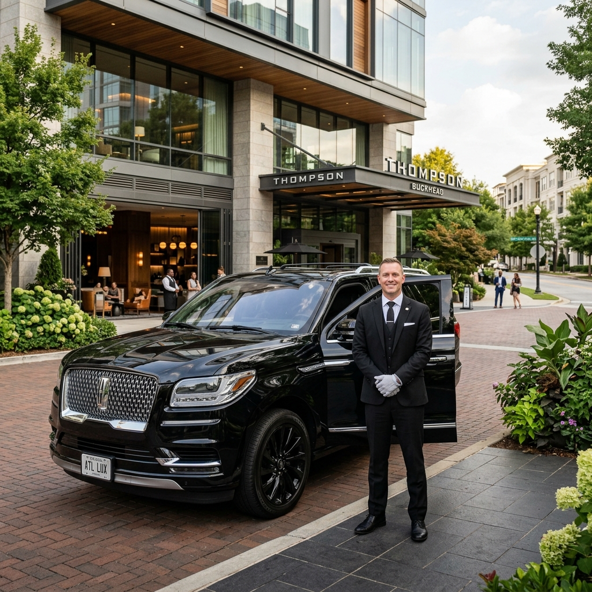

Every Posh Limousines booking follows the same non-negotiable checklist before a single mile is driven. The vehicle is inspected, detailed, and stocked. Your chauffeur reviews your route in advance, monitors real-time traffic, and identifies alternates before departure. When you step outside, your ride is already there.
At Posh Limousines, "on time" means your chauffeur is staged and ready before you are — not pulling up as you walk out the door.

Chauffeur photo
Drop assets/about_chauffeur.png to activateEvery chauffeur who serves a Posh Limousines client has been personally screened — not simply passed through an automated background check. Driving record, professionalism, and client-handling judgment are all evaluated before a chauffeur takes a single booking.
Our standard is executive attire on every engagement — suit, pressed shirt, and professional presentation from the moment they arrive at your door.
Our chauffeurs are background-checked, reference-verified, and evaluated for professional judgment before serving any client. Credentials are confirmed. Driving history is reviewed. And discretion — the ability to be present without intruding — is considered as seriously as any technical qualification.
What happens inside this vehicle stays inside this vehicle.
Our clients include executives navigating sensitive negotiations, professionals with confidentiality obligations, and individuals who simply value their privacy. Whether a conversation involves a pending transaction, a personal matter, or details that are simply not for public consumption — our chauffeurs operate under one rule: what is heard in this vehicle is never repeated outside it. The conversation ends when the door closes.
Non-disclosure agreements are available upon request for corporate and executive clients who require written assurance.
100% of Posh Limousines pickups arrive within or before the scheduled window — and we define that window as your chauffeur staged and ready 10 minutes before your scheduled departure. Not at the curb as you walk out. Already there, waiting for you.
Time is the one thing we cannot give back to a client. We treat it accordingly.
When something outside our control affects timing — a mechanical issue, an unexpected road closure — you hear from us immediately. Never silence. Never a discovery when you walk outside. You will always know your ETA before you need to ask for it.
Based in Metro Atlanta, we serve the greater Atlanta area and run regional transfers throughout the Southeast. Every route — local or long-haul — receives the same pre-reviewed itinerary, vetted chauffeur, and stocked vehicle.
When the details matter — an early-morning flight, a client dinner, a high-stakes meeting, a once-a-year event — you need ground transportation that treats your time and your privacy as seriously as you do. That is what Posh Limousines of Atlanta is built to deliver.
Every booking follows the same pre-trip checklist. Detailed vehicle, stocked water, briefed chauffeur — every time, without being asked.
What is discussed in this vehicle stays in this vehicle. Our chauffeurs are trained to be present — and silent about everything they hear.
Your chauffeur is staged and ready at least 15 minutes before your scheduled pickup — and you hear from us immediately if anything changes.
From Hartsfield-Jackson to Augusta National, Charlotte to Birmingham — every route, same standard, same vehicle, same promise.